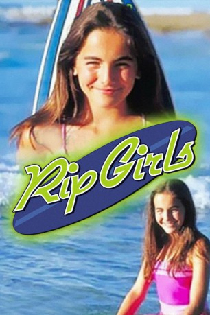

#10242 Surfer Girls
 
 IMDB-Wertung: 6.3 / 10
IMDB-Wertung: 6.3 / 10  Metascore: 0
Metascore: 0 
Sydney Miller ist eine 13-Jährige, die mit ihrem Vater und Stiefmutter Hawaii, die Heimat ihrer verstorbenen Mutter besucht. Sie entdeckt dabei ihre innere Stärke durch das Surfen sowie andere Schätze der Insel. Später findet sie heraus, warum ihr Vater mit ihr nach Hawaii geflogen ist. Sie hat eine große Menge Land geerbt, das ohne sie in Staatsbesitz übergehen würde und an eine Hotelkette verkauft würde. Diese möchte dabei die Strände für Surfer sperren. Nachdem Sydney mehr über ihre Mutter, die Vergangenheit und die Schönheit der Insel gelernt hat, kann sie das Grundstück nicht mehr verkaufen.
Jahr: 2000
Dauer: 87 Minuten
FSK:
Land: Australien Studio: Disney ChannelTonspuren: DD2.0 - ,
Untertitel:
Auflösung: 1080p (1920x1080) Größe: 4034 MB
Genre: Drama, Familie, Liebe
Regisseur: Joyce Chopra
Drehbuch: Jeanne Rosenberg
Soundtrack: Phil Marshall
Darsteller:
 Camilla Belle als Sydney Miller
Camilla Belle als Sydney Miller Dwier Brown als Ben Miller
Dwier Brown als Ben Miller Keone Young als Bo
Keone Young als Bo- Albert Belz als James
- Keala Kennelly als Herself (uncredited)
- Stacie Hess als Gia
- Brian Stark als Kona
- Jeanne Mori als Malia
- Lauren Sinclair als Elizabeth Miller
- Kanoa Chung als Kai
- Meleana White als Mele
- Joy Magelssen als Lanea
- Varoa Tiki als Hawaiian Grandmother
- Rory Togo als Willie
- Jane Hall als Arlene
- Marsha Rapana als Skateboard Girl
- Pru Byrnes als Sydney Surf Double
- Margie Mills als Gia Surf Double
- Mark Winson als Kona Surf Double
- Renee Hyman als Surfer
- Carly Smith als Surfer
- Tim Gaynor als Kona Skateboard Double
- Anastasia Ashley als Herself (uncredited)
- Kassia Meador als Herself (uncredited)
- Daize Shayne als Herself (uncredited)
Datei: X:\2000\Surfer Girls (2000, FSK, 1920x1080).mkv seit 25.12.2018
Festplatte: Gemischt-01+Anime
 Es gibt insgesamt 82 Filme in der Gruppe '2000'
Es gibt insgesamt 82 Filme in der Gruppe '2000'